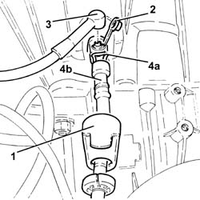
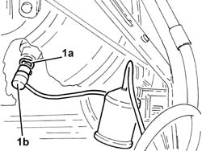
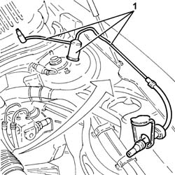
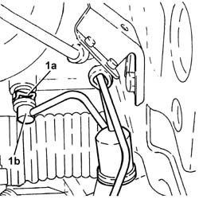
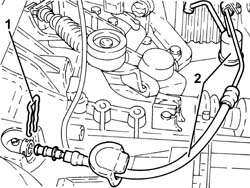

1820B59 SMORZATORE DI VIBRAZIONI CIRCUITO IDRAULICO FRIZIONE CON TUBAZIONI ENTRATA E USCITA - S.R.
- Path
- Procedures > 18 CLUTCH UNIT > 1820 CLUTCH RELEASE CONTROLS > 1820B HYDRAULIC CLUTCH SYSTEM > 1820B59 SMORZATORE DI VIBRAZIONI CIRCUITO IDRAULICO FRIZIONE CON TUBAZIONI ENTRATA E USCITA - S.R.
- Kind
- repair procedure (removal / refitting; the operation number is the code)
- Applies to
- engines: 1.8 T.SPARK, 2.0 JTS; all production periods
- Interactive page
- https://sloeber94.github.io/elrnDB-aGt/en/#/125001230
Applies to: engines: 2.0 JTS; all production periods
 Removing
Removing
 Refitting
RefittingProceed with the removal
Op. 1048A59 PIPE from flow meter to throttle casing hose - R.R..
Proceed with the removal
Proceed with the removal
Op. 5530B52 BATTERY DRIP TRAY/SUPPORT - R.R..
1. Move the protective cover away.
2. Remove the cap from the bleed valve.
3. Connect the recovery device (pipe and reservoir) to the bleed valve on the clutch hydraulic actuator.
4. Raise the retaining clip (4a) until the first click is heard and remove pipe (4b) by a sufficient amount to uncover the bleed hole.
Leave the hydraulic clutch system to drain completely.

Applies to: engines: 2.0 JTS; all production periods
Lift up the clip completely and disconnect the pipe from the clutch hydraulic actuator.
1. Lift up the retaining clip (1a) and disconnect the pipe (1b) from the clutch master cylinder.

Applies to: engines: 2.0 JTS; all production periods
1. Remove the clutch hydraulic circuit vibration damper and inlet and outlet pipes.

Applies to: engines: 2.0 JTS; all production periods
Refitting
RemovingPlace the clutch hydraulic circuit vibration damper and inlet and outlet pipes back in the housing.
Fit the pipe fully home in its seat on the clutch master cylinder and secure with the retaining clip.
Fit the pipe fully home in its seat on the hydraulic clutch actuator and secure with the retaining clip.
Proceed with the refitting
Op. 0010T64 BRAKE AND OR CLUTCH FLUID CHECK LEVEL AND TOP UP AS NECESSARY.
Proceed with the refitting
Op. 0010T67 HYDRAULIC CLUTCH SYSTEM BLEED AIR.
Proceed with the refitting
Op. 0010T65 HYDRAULIC BRAKE SYSTEM BLEED AIR.
Proceed with the refitting
Op. 5530B52 BATTERY DRIP TRAY/SUPPORT - R.R..
Proceed with the refitting
Proceed with the refitting
Op. 1048A59 PIPE from flow meter to throttle casing hose - R.R..
Applies to: engines: 1.8 T.SPARK; all production periods
Removing
Refitting- Move the protective cover away.
- Remove the cap from the bleed valve.
- Connect the recovery device (pipe and reservoir) to the bleed valve on the clutch hydraulic actuator.
- Raise the retaining clip (4a) until the first click is heard and remove pipe (4b) by a sufficient amount to uncover the bleed hole.
- Leave the hydraulic clutch system to drain completely.
Applies to: engines: 1.8 T.SPARK; all production periods
- Lift up the retaining clip (1a) and disconnect the pipe (1b) from the clutch master cylinder.

Applies to: engines: 1.8 T.SPARK; all production periods
- Lift up the clip completely and disconnect the pipe from the clutch hydraulic actuator.
- Remove the clutch hydraulic circuit vibration damper and inlet and outlet pipes after having released with from the fastening band.

Applies to: engines: 1.8 T.SPARK; all production periods
Refitting
Removing- Place the clutch hydraulic circuit vibration damper and inlet and outlet pipes back in the housing.
- Fit the pipe fully home in its seat on the clutch master cylinder and secure with the retaining clip.
- Fit the pipe fully home in its seat on the hydraulic clutch actuator and secure with the retaining clip.
- Op. 0010T64 BRAKE AND OR CLUTCH FLUID CHECK LEVEL AND TOP UP AS NECESSARY
- Op. 0010T67 HYDRAULIC CLUTCH SYSTEM BLEED AIR
- Op. 0010T65 HYDRAULIC BRAKE SYSTEM BLEED AIR
- Op. 5530B52 BATTERY DRIP TRAY/SUPPORT - R.R.
- Op. 5530B10 BATTERY - R+R